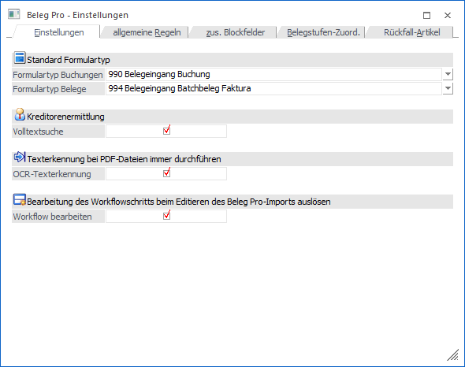
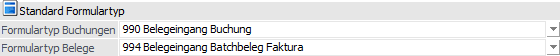
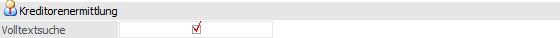
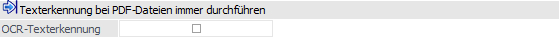
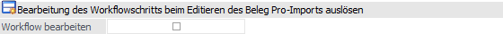

In dem Register "Einstellungen" können globale Einstellungen getroffen werden, welche sich für den gesamten Mandanten auswirken.

Folgende Eingabefelder und Einstellungen stehen zur Verfügung:
Standard Formulartyp

Wenn für den Kreditor eine Beleg Pro - Vorlagen angelegt wurde, so wird der Formulartyp aus der Vorlage gezogen und nicht aus der Einstellung des Standard-Formulartyps.
Ø Formulartyp Buchungen
Im Formulartyp stecken wichtige Informationen, wie z.B. welcher CRM-Schritt geschrieben werden soll bzw. welcher Archiv-Nummernkreis verwendet werden soll. Der Standard-Formulartyp der WinLine für Buchungen ist der Formulartyp "990 - Belegeingang Buchung" und wird normalerweise dementsprechend beim Eingang vorbelegt. Wenn ein anderer Formulartyp gewünscht ist, kann dieser hier eingetragen werden. Angezeigt werden nur Formulartypen mit der Kategorie "3 - Belegeingang Buchungen".
Ø Formulartyp Belege
Der Standard-Formulartyp der WinLine für Belege ist der Formulartyp "994 - Belegeingang Batchbeleg Faktura" und wird normalerweise dementsprechend beim Eingang vorbelegt. Wenn ein anderer Formulartyp gewünscht ist, kann dieser hier eingetragen werden. Angezeigt werden nur Formulartypen mit der Kategorie "4 - Belegeingang Belege".
Kreditorenermittlung

Ø Volltextsuche
Wenn diese Checkbox aktiviert ist, so wird die Volltextsuche bei der Kreditorenfindung angestoßen, falls die vorherigen eindeutigen Merkmale nicht gefunden werden konnten (UID, IBAN, Mailadresse, Homepage). Ansonsten muss der Kreditor manuell hinterlegt werden.
Achtung
Die Volltextsuche kann - je nach Größe des Dokuments - einige Zeit in Anspruch nehmen kann!
Texterkennung bei PDF-Dateien immer durchführen

Ø OCR-Texterkennung
Bei Aktivierung dieser Checkbox wird bei jedem eingehenden Dokument über Beleg Pro eine OCR-Erkennung durchgeführt, unabhängig davon, ob das PDF-Dokument bereits "durchsuchbar" (enthält markierbaren Text) ist oder nicht.
Hinweis
Es gibt teilweise PDF-Dateien, wo nur die Belegmitte "durchsuchbar" ist und die wichtigen Kreditoreninfos im Kopf- und Fußbereich als Bild eingefügt sind. Bei solchen Belegen würde normalerweise keine OCR-Erkennung innerhalb der WinLine durchgeführt werden, da wir bereits durchsuchbare Texte im PDF erkennen. Da die wichtigen Infos zum Kreditor aber lediglich als Bild im PDF vorhanden sind, wird der Kreditor nicht automatisch gefunden. Wenn diese Option aktiviert ist, sollte der Kreditor in solchen Fällen trotzdem gefunden werden.
Achtung
Diese Option kann mit längeren Wartezeiten in Verbindung stehen, da anschließend für jedes Dokument eine OCR-Erkennung stattfindet (speziell wenn es PDF-Dateien mit vielen Seiten/Text sind).
Bearbeitung des Workflowschritts beim Editieren des Beleg Pro-Imports auslösen

Ø Workflow bearbeiten
Für eine lückenlose Dokumentation von Änderungen kann bei einem Editieren der Importdaten, welches über das Fenster " Beleg Pro - Import stattfindet, die Bearbeitung des aktuellen Beleg Pro-Workflowschritts ausgelöst werden. So können z.B. Mailbenachrichtigungen versandt werden, sofern die Importdaten erneut gespeichert werden.